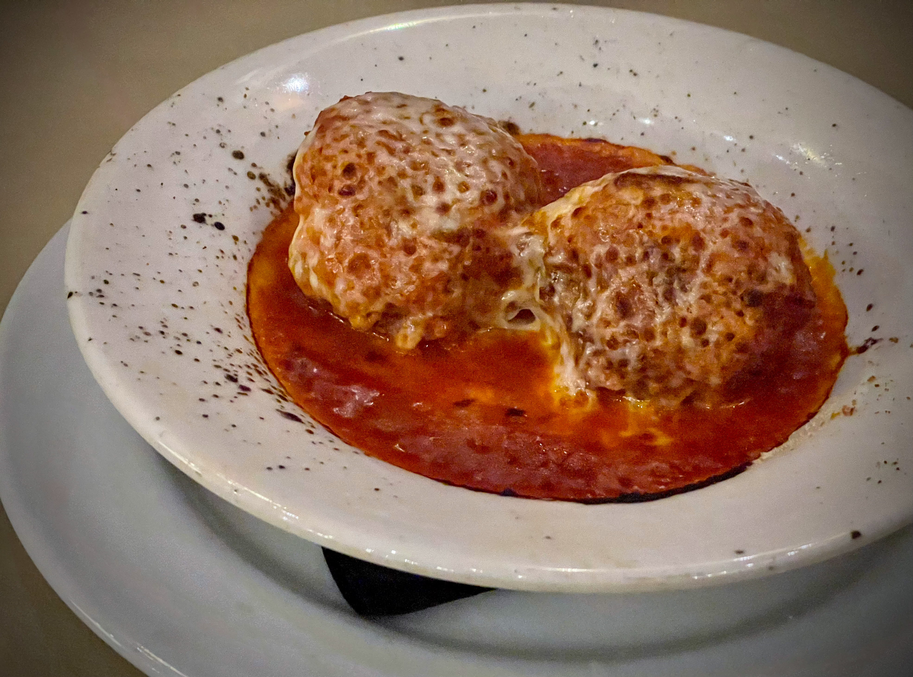

Chicken Parmesan
Home

This classic Italian-American comfort food features tender, breaded
chicken cutlets topped with marinara sauce and melted mozzarella and
Parmesan cheeses. Served over pasta or with a side of garlic bread, this
dish is a family favorite that's surprisingly easy to make at home. The
key is properly breading the chicken and achieving that perfect golden
brown crust.
Ingredients
-
Chicken: You'll need 4 boneless, skinless chicken
breasts, pounded to about ½-inch thickness for even cooking.
-
Breading: The breading consists of all-purpose flour,
eggs (beaten), and breadcrumbs mixed with grated Parmesan cheese.
-
Seasonings: Season the flour and breadcrumbs with salt,
black pepper, garlic powder, and Italian seasoning for flavor.
-
Marinara Sauce: You'll need about 2 cups of your
favorite marinara sauce, either homemade or store-bought.
-
Cheese: A combination of shredded mozzarella and grated
Parmesan cheese (about 2 cups mozzarella and ½ cup Parmesan) for the
topping.
-
Oil: Vegetable or olive oil for frying the chicken
cutlets until golden brown.
-
Fresh Herbs: Fresh basil or parsley for garnish
(optional but recommended).
Steps
-
Prepare the chicken: Place each chicken breast between
two pieces of plastic wrap and pound to ½-inch thickness using a meat
mallet or rolling pin. Season both sides with salt and pepper.
-
Set up breading station: Prepare three shallow dishes:
one with flour seasoned with salt, pepper, and garlic powder; one with
beaten eggs; and one with breadcrumbs mixed with Parmesan cheese and
Italian seasoning.
-
Bread the chicken: Dredge each chicken breast in the
flour, shaking off excess. Dip in the beaten eggs, then press into the
breadcrumb mixture, ensuring both sides are well coated.
-
Fry the chicken: Heat about ½ inch of oil in a large
skillet over medium-high heat. Fry the chicken cutlets for 3-4 minutes
per side until golden brown and cooked through. Drain on paper towels.
-
Assemble and bake: Preheat oven to 425°F. Place the
fried chicken in a baking dish. Top each cutlet with marinara sauce,
then sprinkle with mozzarella and Parmesan cheeses.
-
Bake until bubbly: Bake in the preheated oven for
15-20 minutes until the cheese is melted and bubbly. Let rest for a few
minutes before serving. Garnish with fresh basil or parsley if desired.